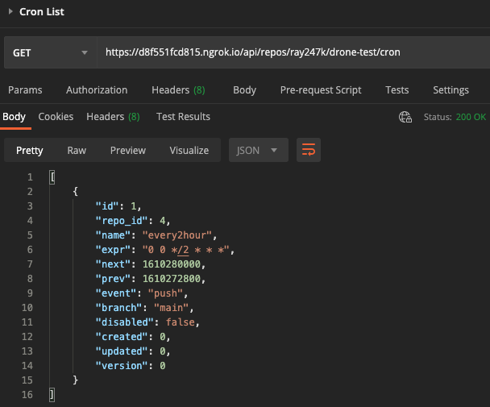
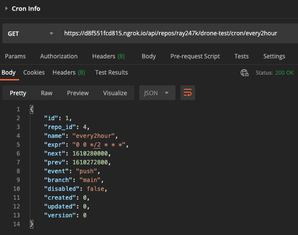
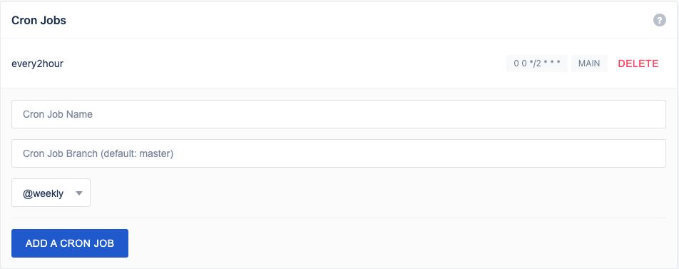
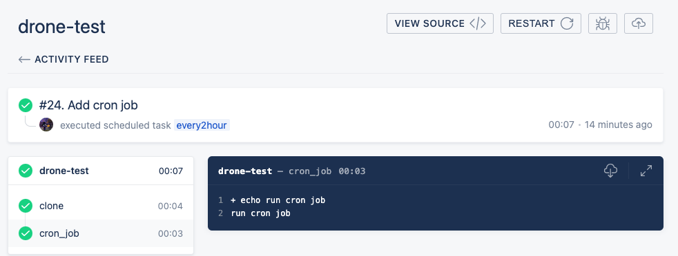
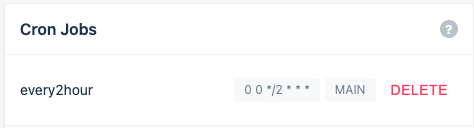
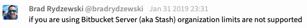

[用 Drone 建立自動部署] 03 部署排程設定與權限管理
透過 Drone 建立自動部署流程，部署排程設定與權限管理

使用 Drone
建立自己的自動部署服務
Drone 是一套以 Golang 開發的一套 CI/CD 系統工具
本篇進行部署排程設定與權限管理的教學
定時執行 (Cron Job)
當初在設定排程的時候真的是各種坑，要是前面的服務啟動花了三天的話
排程設定不斷查文件、看討論串、測試、除錯，整個大概花了半個月吧
很多細節作者都只回在 gitter 或是論壇裡，並沒有寫進官方文件
還有公司用的是 bitbucket，有些功能並不支援！
自訂執行時間
服務本身的限制
Drone 1.0 最終版不給在介面上自訂因為容易出錯：來源 且最低重複執行時間半小時一次：來源
專案設定檔的設定方法
作者說明應該要用 CLI 定義好之後在專案的 .drone.yml 檔去設定觸發條件的 cron job 名稱
而不是表達式：Cron job definition
表達式的時區居然是寫死的
官方說明排程的時區是使用 UTC 也就是 +0 時區，所以要自己換算：Cron Timezones
The current implementation calculates the execution time based on UTC as opposed to local time.
不過官方也說自訂排程時間不會在準確的時間被觸發，前後可能會差一點點：參考資料
建立 Cron Job
大部分教學都使用 Drone CLI，但是在官網發現可以用 API 建立： API drone cron create
，結果一樣
首先要去 Drone 頁面右上的 User Settings 取得 Token 作為 Post 的 header
打開 Postman 建立一個 POST /api/repos/{owner}/{repo}/cron 請求
並在 Headers 頁籤加入 Token
Tocken key 是 Authorization
而對應的 value 長得像 Bearer {一串英文數字} 的格式
Body 則是設定 Cron Job 名稱和執行條件還有要執行的分支
{
"name": "every2hour",
"expr": "0 0 */2 * * *",
"branch": "main"
}
可以看到我的條件是 0 0 8-16,*/2 * * *，代表「8-16 點，每兩個小時執行一次」
或是也可以設定成 0 0 10,12,14,16 * * *「每個 10 12 14 16 點」執行
可以使用 線上工具 來依照條件產生
注意！這邊作者使用的時間套件是包含秒數的 6 位數格式！
查看 Cron Job
Cron List
建立完成之後可以使用 GET /api/repos/{owner}/{repo}/cron 查看所有 Cron Job 列表

Cron Info
使用 GET /api/repos/{owner}/{repo}/cron/{name} 則可以查看指定 Cron Job 的詳細資訊

回到 Drone 後台，點開專案的 settings 頁面會發現我們剛剛用 API 建立的 Cron Job 被加入了!

等時間到就會執行 .drone.yml 中由指定 Cron Job 名稱觸發的 pipeline

更新 Cron Job
更新Cron Job 使用 PATCH /api/repos/{owner}/{repo}/cron/{name}
Body 帶入要改變的內容，例如把使用的分支換成 dev
或是把執行時間換成每天的固定時間執行
{
"name": "every2hour",
"expr": "0 0 2,4,6,8 * * *",
"branch": "dev"
}
刪除 Cron Job
可以使用 DELETE /api/repos/{owner}/{repo}/cron/{name} 刪除之前建立的 Cron Job
但是我更偏好用後台的 UI 介面按下 DELETE 就好

另外一種操作方式是 Drone CLI，不過這次沒用上，提供給各位參考
權限控管
如果沒設定使用者，服務上線到公開網址的話就是全世界都可以拿來使用：官方說明
Drone registration is open by default. This means any user can register an account and use the system.
管理員權限設定
在 drone_server 建立 admin 才能管理其他帳號：DRONE_USER_CREATE
- DRONE_USER_CREATE=username:ray247k,admin:true
使用者名單設定
藉由設定使用者名單來限制存取權限：官方文件
可以使用機構或是使用者 ID
- DRONE_USER_FILTER=ray247k,lemon,JohnDoe
但如果版本控制使用的是 Bitbuctet 平台，則不支援 Organization 限制：討論串說明
所以只要有寫入權限就可以看到 setting 頁面

使用 GitHub 測試，結果是可以使用組織進行權限控管的，並且不會開放 setting 分頁給所有人